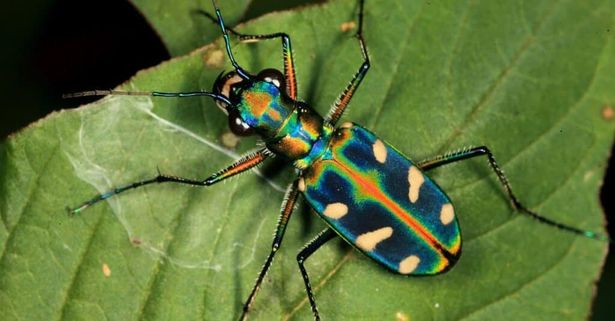

Amazonomy
Para além do marketing
Ambiental
- Mapeamento de espécies
- Identificação de novas espécies
- Geodiferenciação dos pontos de coleta
- Reconhecimento de lugares pouco explorados
- Diversos grupos taxonômicos estudados
Científico
- Aumento da coleção biológica de invertebrados de instituições parceiras
- Aumento do banco de dados da biodiversidade Amazônica
- Dados disponíveis ao público
- Metodologia para acelerar descoberta de espécies
- Publicação de periódicos científicos